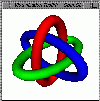
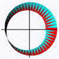
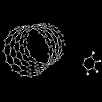

{kind=link}
{kind=link}
{kind=link}

Here's the basic steps I took to get Java-VTK working on Linux.
Linux: Red Hat 5.1
VTK: version 2.3
Java: jdk_1.1.7-v1a-glibc-x86.tar.gz from Blackdown
Edit VTK's /common/vtkJavaUtil.cxx. Where the mutex routines are defined:
#ifdef VTK_USE_SPROC // for SGI's ... #else // for solaris ... #endifdefine for Linux PThreads:
#define USE_PTHREADS #ifdef USE_PTHREADS #include "pthread.h" pthread_mutex_t vtkGlobalMutex; #define VTK_GET_MUTEX() pthread_mutex_lock(&vtkGlobalMutex) #define VTK_RELEASE_MUTEX() pthread_mutex_unlock(&vtkGlobalMutex)
My relevant env vars:
CLASSPATH=.:/home/heiland/Java/jdk117_v1a/vtk:/home/heiland/vtkJava/java:/home/heiland/vtkJava/java/vtk LD_LIBRARY_PATH=.:/usr/local/bin:/home/heiland/vtkJava/common:/home/heiland/vtkJava/graphics:/home/heiland/vtkJava/patented:/home/heiland/vtkJava/imaging:/home/heiland/vtkJava/contrib:/home/heiland/vtkJava/java:/home/heiland/tcl8.0.3/unix:/home/heiland/tk8.0.3/unixAfter unzipping, untarring the vtk distribution, I renamed the vtk home dir to vtkJava. I configure for both Java and Python (the latter of course is not required here):
% cd /home/heiland/vtkJava % setenv CXX /usr/bin/c++ % setenv CC /usr/bin/cc % ./configure --with-mesa --with-shared --with-tcl --with-java --with-python --with-patented --with-contrib --with-tkwidget --with-x
Here's my user.make and system.make. Then it's just a matter of building everything :)
% make
(using SGI java version "3.1.1 (Sun 1.1.6)")
Here's a simple program to display a sphere (based on Paul Hsieh's example sent to the VTK mail list on 21 Aug 98, found via NCSA's VTK archive; Search Msgs/Subject 'vtkpanel'):
Compile: % javac sphere.java Run: % java sphere
Here are a couple of files that provide a Swing/VTK framework for GUI/rendering:
Viewer.java
VTKPanel.java
Related links:
Linux Threads FAQ
PThread mutex
Slack's VTK Linux HOWTO (particularly, the Installing Mesa section)
Linux: Red Hat 5.1
VTK: version 2.3
Python: Python-1.5.2 python.org
My Python env vars:
PYTHONPATH=.:/home/heiland/vtkJava/common:/home/heiland/vtkJava/graphics:/home/heiland/vtkJava/patented:/home/heiland/vtkJava/imaging:/home/heiland/vtkJava/contrib:/home/heiland/Python-1.5.2/Lib/lib-tk PYTHONHOME=/home/heiland/Python-1.5.2
|  |
|  | ||
| flamingo.py | borromean.py | tknotTube.py | moebius.py |
A table of toroidal knots.
(you'll want colors.py too)
nanotube.pdb

caffeine.pdb
 diffGear.pdb.gz
diffGear.pdb.gz

Go here for more nano-machines.
{kind=link}